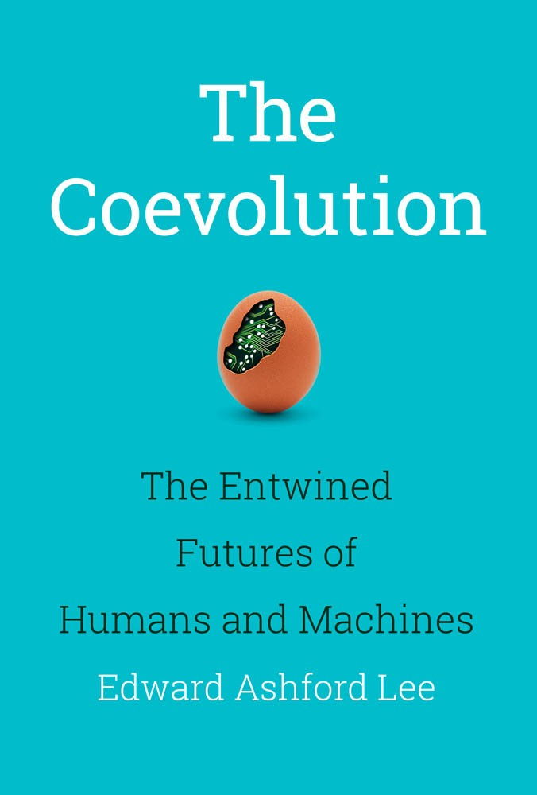
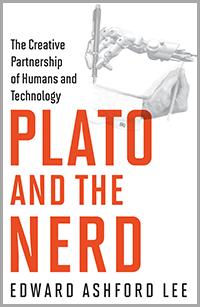
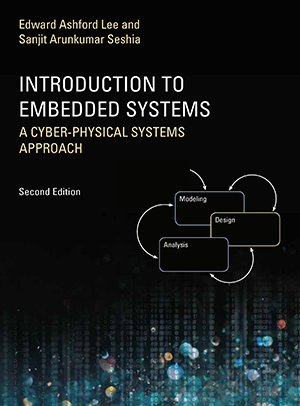
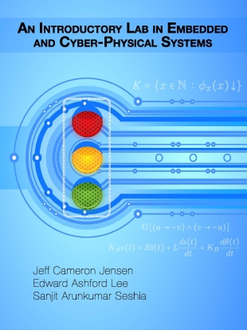
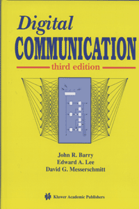
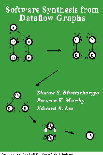
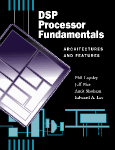
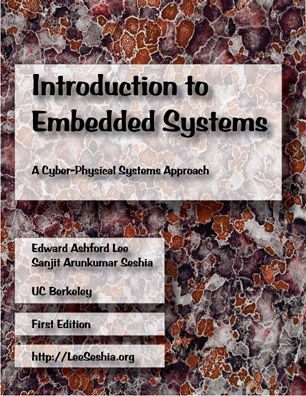
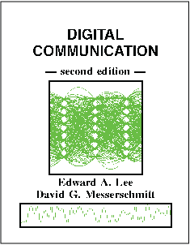
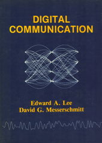

|  |
Edward Ashford Lee, The Coevolution: The Entwined Futures of Humans and Machines, MIT Press, 2020.
Now available open access! This book argues that we are less in control of the trajectory of technology than we think. Technology shapes us as much as we shape it, and it may be more defensible to think of technology as the result of a Darwinian coevolution than the result of top-down intelligent design. To understand this interpretation requires a deep dive into how humans are different from computers, how evolution works, and how technology development today resembles the emergence of a new life form on our planet. Translations: Chinese. |
|  |
Edward Ashford Lee, Plato and the Nerd: The Creative Partnership of Humans and Technology, MIT Press, 2017.
This book explores how engineers use models. Lee argues that these models are not discovered preexisting truths, but rather are invented in a fundamentally human creative process. But there are limits. Lee contests the runaway enthusiasm of technology boosters who claim that everything is computation—that even such complex phenomena as human cognition are software operating on digital data. In this view, humans become superfluous. But instead of being displaced by technology, humans are coevolving with it as it complements our cognitive and physical capabilities. Translations: Chinese, Japanese. |
|  |
E. A. Lee and S. A. Seshia, Introduction to Embedded Systems -- A Cyber-Physical Systems Approach, MIT Press, Second Edition, 2017, available as a paperback and PDF download.
|

|
Claudius Ptolemaeus, editor, System Design, Modeling, and Simulation using Ptolemy II, Ptolemy.org, 2014, available as a free PDF download, a low-cost paperback, and Chinese translation (also from Amazon in China).
This book is a definitive introduction to models of computation for the design of complex, heterogeneous systems. It has a particular focus on cyber-physical systems, which integrate computing, networking, and physical dynamics. The book captures more than twenty years of experience in the Ptolemy Project at UC Berkeley, which pioneered many design, modeling, and simulation techniques that are now in widespread use. All of the methods covered in the book are realized in the open source Ptolemy II modeling framework and are available for experimentation through links provided in the book. Translations: Chinese. |
|  |
Jeff C. Jensen, Edward A. Lee, and Sanjit A. Seshia, An Introductory Lab in Embedded and Cyber-Physical Systems, http://leeseshia.org/lab/, 2014, available as a free PDF download.
A laboratory companion to Lee & Seshia providing a suite of laboratory exercises and software. |

|
E. A. Lee and P. Varaiya, Structure
and Interpretation of Signals and Systems, Second Edition, LeeVaraiya.org, 2011, available as a free PDF download and low-cost paperback.
|
|  | J. Barry, E. A. Lee and D. G. Messerschmitt, Digital
Communication, Kluwer Academic Press, 2004 (third edition). This book is intended for designers and would-be designers of digital communication systems. The general approach of the book is to extract the common principles underlying a range of media and applications and present them in a unified framework. Specifically, we treat the transport of bit streams from one geographical location to another over various physical media, such as wire pairs, coaxial cable, optical fiber, and radio. We also treat multiple-access channels, where there are potentially multiple transmitters and receivers sharing a common medium. . |
|  |
S. S. Bhattacharyya, P. K. Murthy, and E. A. Lee,
Software Synthesis from Dataflow Graphs
Kluwer Academic Press, 1996.
This book studies the problem of synthesizing software for embedded signal processing systems starting from applications expressed as synchronous dataflow (SDF) graphs. After a comprehensive review of the theory behind SDF, techniques are given to optimize primarily the program memory size and secondarily the data memory size. To accomplish this, SDF graphs describing multirate signal processing applications are scheduled into nested loops. A formal theory for constructing and manipulating these loops is developed, and a class of looping structures, called single appearance schedules, is shown to be the most efficient with respect to code size. The existence of such structures is studied, and algorithms for optimally constructing them are given. Extensive experimental data is presented, demonstrating the efficacy of the techniques. |
|  |
P. Lapsley, J. Bier, A. Shoham, and E. A. Lee,
DSP Processor Fundamentals -- Architectures and
Features,
IEEE Press, New York, 1997.
This book describes key aspects of DSP processor architectures including numeric formats, data paths, memory structures, instruction sets, execution control, and pipelining. It also covers features found on today's highly integrated DSPs, such as on-chip peripherals, on-chip debugging facilities, and clocking options. Additionally, the book discusses the advantages and disadvantages of various types of DSP hardware and software development tools. Commercially available DSP processors are used as examples. The book is intended for design engineers, engineering managers, marketing managers, DSP and microprocessor architects, and students of architecture. |
A. Kamas and E. A. Lee, Digital Signal Processing Experiments, Prentice-Hall, 1989.
Earlier Editions

|
E. A. Lee and P. Varaiya, Structure
and Interpretation of Signals and Systems, First Edition, Addison Wesley, 2003
This book has an associated Lab Manual that includes well-integrated MATLAB and Simulink labs. |
|  |
E. A. Lee and S. A. Seshia, Embedded Systems -- A Cyber-Physical Systems Approach, First Edition, LeeSeshia.org, 2011, available as a free PDF download and low-cost paperback.
|
|  | E. A. Lee and D. G. Messerschmitt, Digital Communication, Kluwer
Academic Press, 1994 (second edition) This book concerns the transport of bit streams from one geographical location to another over various physical media. The material is relevant to the design of local and metropolitan area data networks, voice and video telephony systems, digital CATV distribution, digital cellular and radio systems, the narrowband and broadband integrated services digital network (ISDN), computer communication systems, voiceband data modems, and satellite communication systems. We extract the common principles underlying these and other applications and present them in a unified framework. |
|  | E. A. Lee and D. G. Messerschmitt, Digital Communication, Kluwer
Academic Press, 1988 (first edition) This book concerns the transport of bit streams from one geographical location to another over various physical media. The material is relevant to the design of local and metropolitan area data networks, voice and video telephony systems, digital CATV distribution, digital cellular and radio systems, the narrowband and broadband integrated services digital network (ISDN), computer communication systems, voiceband data modems, and satellite communication systems. We extract the common principles underlying these and other applications and present them in a unified framework. |